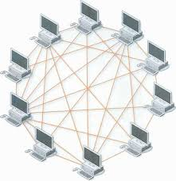

Rede de Computadores
Uma rede de computadores é um conjunto de dispositivos interligados que compartilham recursos, informações e serviços. Essa conexão pode ocorrer por meio de cabos, sinais sem fio, satélites ou outros meios de transmissão. O objetivo principal é permitir a comunicação eficiente entre os dispositivos, sejam eles computadores, servidores, impressoras ou smartphones.
Dispositivos: computadores, roteadores, switches, servidores.
Meios de transmissão: cabos de rede (como Ethernet), Wi-Fi, fibra óptica.
Protocolos: regras que definem como os dados são transmitidos (ex: TCP/IP)

A topologia de malha é uma configuração de rede em que cada dispositivo está conectado diretamente a todos os outros da rede. Essa estrutura cria uma rede altamente redundante, permitindo que os dados encontrem múltiplos caminhos para chegar ao destino. Isso significa que, mesmo que uma conexão falhe, a comunicação pode continuar por outras rotas disponíveis, tornando a rede extremamente confiável.
Existem dois tipos principais de malha: a completa, onde todos os dispositivos se conectam entre si, e a parcial, em que apenas alguns dispositivos têm conexões diretas com todos os outros. A malha completa oferece o máximo de redundância, mas também exige mais recursos, como cabos e interfaces de rede, o que pode tornar sua implementação mais cara e complexa.
Apesar do custo elevado e da dificuldade de manutenção, a topologia de malha é valorizada em ambientes que exigem alta disponibilidade, como redes militares, sistemas industriais críticos e infraestruturas governamentais. Além da confiabilidade, ela também oferece maior segurança, já que os dados podem ser transmitidos por caminhos alternativos, dificultando interceptações.